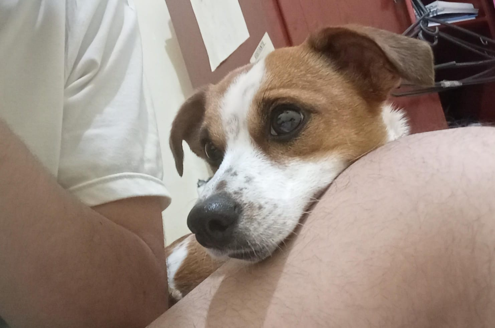
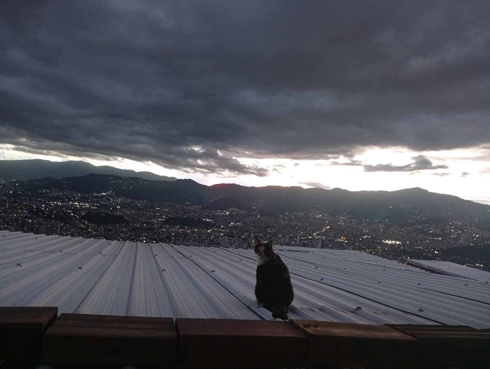
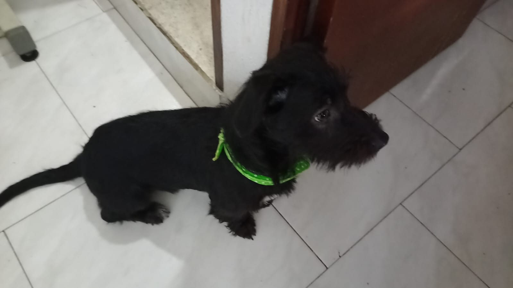

Lupita

Lupita es una perrita con apenas 1 año y medio, es super juguetona, amigable, territorial y protectora
tambien es fanatica de la leche, la carne y el dulce en todas sus presentaciones!, es de raza, (no se sabe de que, eso nos dijeron al adoptarla)
probablemente un Jack Russell Terrier o quien sabe.
Sammy

Sammy es una gata con mas de 4 años, es una gata seria pero cuando esta tranquila se vuelve la mas amorosa y busca mimos por montones, es una gata de 3 colores
es una fanatica de la leche, la carne, las alturas y no convive mucho con otros animales, unicamente con lupita y se llevan super bien, les encanta jugar y perseguirse.
Thomas

Thomas es un perro super mega energetico, le encanta salir a correr, jugar con otros perros, es un perro muy amoroso y
es un fanatico tambien de la leche, le encanta la naturaleza, correr y revolcarse en el pasto y es un perseguidor profesional de palomas